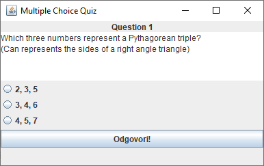
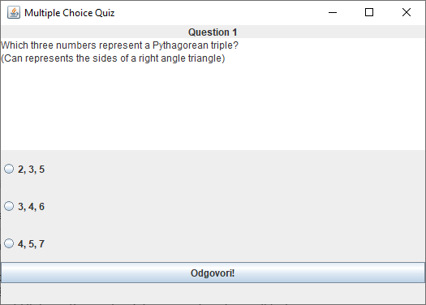

Potrebno je napraviti grafičku aplikaciju za prikaz pitanja s ponuđenim odgovorima kako je prikazano na slikama:


Tri su osnovne razlike između slika:
Potrebno je dopuniti implementaciju klase MultipleChoiceQuizFrame koja se nalazi u paketu hr.fer.oop.zad4 i pri tome osigurati da izgled aplikacije odgovara prikazanim slikama.
Napomena: U predlošku su označena mjesta s komentarom // TODO ... na kojima trebate dodati svoj kod.
Klasa MultipleChoiceQuestion služi za pohranu informacija o pitanjima s ponuđenim odgovorima. Ima konstruktor u kojem se postavljaju vrijednosti atributa, gettere za podatke o pitanju, getter i setter za dohvaćanje i postavljanje odabranog odgovora te metodu hasAnswer koja vraća informaciju je li odabran neki odgovor na pitanje. Klasu MultipleChoiceQuestion NIJE doputeno mijenjati. članska varijabla answer definira točan odgovor na pitanje. Ako je njezina vrijednost 0, onda je točan odgovor choice1, ako je vrijednost 1, onda je točan odgovor choice2, a ako je vrijednost varijable 2, onda je točan odgovor choice3.
Aplikacija se sastoji od posebnog panela za prikaz pitanja, od gumba za ocjenjivanje ("Odgovori") te od statusne trake u kojoj se prikazuju rezultati ocjenjivanja (na početku je prazna).
Panel za prikaz pitanja (ugnježđena klasa MultipleChoiceQuestionPanel) prikazuje naslov pitanja na vrhu (JLabel), tekst pitanja u glavnom dijelu panela (JTextArea), te tri gumba tipa JRadioButton u kojima se prikazuju ponuđeni odgovori.
Panelu za prikaz pitanja u konstruktoru se predaje referenca na pitanje koje je potrebno prikazati. Pri tome se parametri pitanja postavljaju u odgovarajuće komponente grafičkog sučelja.
Na početku niti jedan od tri gumba s odgovorima nije odabran. Potrebno je osigurati da samo jedan gumb može istovremeno biti odabran.
Pritiskom na gumb za ocjenjivanje pokreće se ocjenjivanje pitanja te se u statusnoj traci ispisuje odgovarajuća poruka:
MultipleChoiceQuestion postavite odabrani odgovor, te se pitate je li točan metodom isCorrect.U klase MultipleChoiceQuizFrame i MultipleChoiceQuestionPanel slobodno možete dodavati atribute/članske varijable i privatne metode po potrebi.